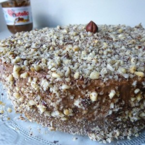
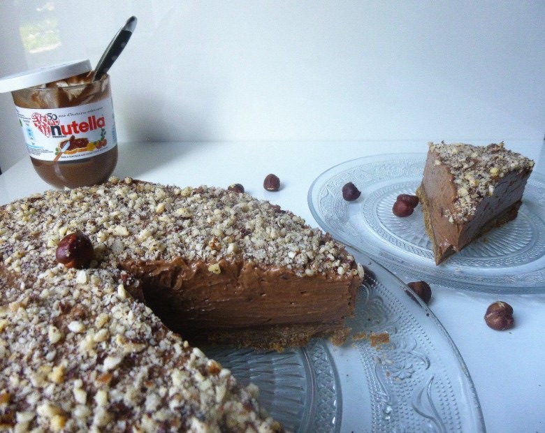

Cheesecake Nutella

Et si on mangeait un cheesecake Nutella!!?Alors voila ce n’est pas vraiment un cheesecake comme on a l’habitude d’en voir vu que normalement ils sont blancs. J’ai décidé d’y ajouter du nutella (pas calorique du tout et parfait pour un régime avant l’été!!!!) . C’est une recette vraiment toute simple à réaliser. Au départ j’avais peur que ce soit un peu écœurant et lourd. Le verdict? Pas du tout (peut être que si une personne s’avalait le gâteau d’un coup d’un seul il trouverait ça écœurant, moi je me suis arrêtée à deux parts!) Un régal pour tout le monde! Le cheesecake Nutella il faut vraiment l’essayer!!
Ingrédients
- Petit beurre - 250 g
- Beurre mou - 100 g
- nutella - 1 cuillère à café
- Nutella - 400 g
- philadelphia à température ambiante - 500 g
- sucre glace - 60 g
Instructions
- Mixer les biscuits, le beurre et 1 cac de nutella.
- Tasser le mélange au fond du moule à manquer
- Dans une jatte battre le fromage avec le sucre glace
- Sans cesser de battre le fromage ajouter petit à petit le nutella
- Continuer de battre jusqu’à obtenir une crème bien homogène
- A l'aide d'une spatule verser petit à petit la crème sur les biscuits
- Égaliser la surface
- Mettre au réfrigérateur minimum 4h
- Au moment de servir , démouler et décorer (moi j'ai mixé des noisettes entières pour en mettre tout autour du gâteau et sur le dessus)

Les tips de la communauté
Cheesecake décrit comme 'une véritable tuerie' par les lecteurs. Très peu de commentaires mais tous extrêmement positifs et enthousiaste.